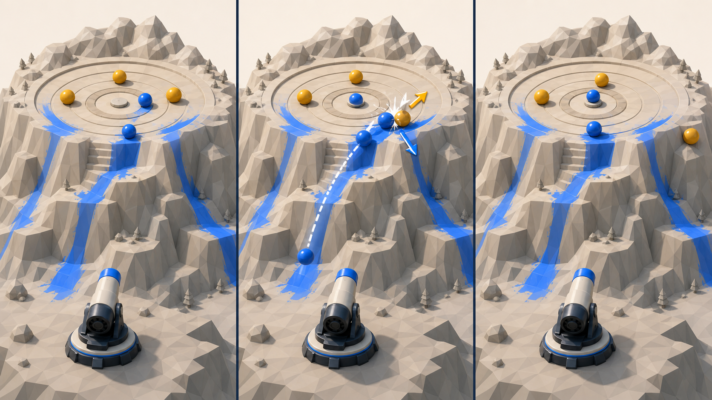

현실 스포츠가 오래 재미있는 이유는 목표가 작아서가 아니다. 한 번의 샷이 다음 샷의 위치, 남은 문제, 점수 조합, 시간 부채를 바꾸기 때문이다. 이 보고서는 그 경기 구조만 Paint Mountain으로 옮긴 여섯 가지 새 코어 루프다.
고정 포대 · 발사 전 yaw/elevation/power 계획 · 발사 후 조작 금지 · 실제 접촉 페인트는 유지한다. 현재의 낮은 커버리지 컷을 단순히 높이는 안, 좁은 표적만 늘리는 안, 이전에 제안한 체크포인트·페인트 상태·기믹 콤보·탄종·발사 전 장치는 전부 버렸다.
RESET
이전 접근이 왜 빗나갔는가
문제는 “할 일이 적다”가 아니라 “결과가 다음 판단을 거의 바꾸지 않는다”는 데 있다.
현재 게임은 목표 지점을 고르면 첫 충돌을 맞춰 주고, 낮은 목표 커버리지는 몇 번의 유효 샷만으로 넘어갈 수 있다. 이 상태에서 숫자만 조이면 같은 판단을 더 정밀하게 반복하게 된다.
그래서 이번에는 표면 테마가 아니라 스포츠의 인과 구조를 가져왔다. 모든 후보는 한 발 뒤 보드 상태가 바뀌고, 그 변화가 다음 발의 목표를 다시 정의한다.
정체성으로 남길 것
멀리 떨어진 고정 포대
발사 전 물리 예측
발사 후 관찰만 가능
산 표면 접촉을 따라 남는 페인트
기존 공이 보드에 남는 물리 상태
이번 탐색에서 제외한 것
목표 커버리지 수치만 상승
더 좁고 더 먼 표적
골프 홀인원·양궁처럼 첫 충돌 정확도만 평가
순서대로 통과하는 체크포인트
기믹을 많이 밟는 콤보
새 설계 기준: 발사 전 선택 → 물리적 결과 → 다음 샷의 가치가 달라짐. 이 세 단계가 없으면 스포츠 이름이 붙어도 기존 게임과 같은 아이디어로 본다.
특히 양궁·축구 페널티킥·골프 홀인원은 이번 본선에서 뺐다. 현재의 지형 타기팅이 첫 충돌을 해결해 주는 한, 이 스포츠들은 결국 “더 작은 곳을 맞혀라”로 수렴하기 때문이다.
DIFFERENCE MAP
서로 무엇이 다른가
방향
샷 뒤에 남는 것
다음 판단
현재 게임과 가장 큰 차이
컬링
공들의 상대 위치
추가·가드·밀어내기
페인트 양이 아니라 엔 종료 위치로 승부
볼링
첫 발 뒤의 잔여 표적 형태
스트라이크/스페어/오픈 프레임
한 프레임이 두 발짜리 작은 드라마가 됨
다트
남은 정확한 점수
어떤 조합을 남길지 계산
많이 칠수록 좋다는 목표를 뒤집음
포켓볼
오브젝트 공과 포켓의 배치
호출한 공·포켓·다음 각도
충돌 순서와 다음 배치가 모두 성공 조건
스키점프
첫 접촉·바운스·아웃런 품질
거리와 안정성의 절충
도착 여부가 아니라 수행 품질을 채점
바이애슬론
명중 실패가 만든 거리 부채
빠른 진행과 안전한 명중의 절충
실패가 리셋 대신 다음 구간의 비용이 됨
01
CURLING · POSITIONAL END
마운틴 하우스 엔드
“중앙을 맞히기”가 아니라, 마지막 공이 멈춘 뒤 누가 더 좋은 위치를 차지했는지를 겨룬다.

이미지 해석용 콘셉트. 실제 구현·충돌·점수 판정의 증거가 아니다.
발사 전중앙 공, 앞을 막는 가드, 상대 기준 공이 모두 남아 있다.
충돌새 공이 지형에 닿아 칠한 뒤 방어 공을 바깥으로 밀어낸다.
엔 종료모든 공이 멈춘 뒤 중앙에 더 가까운 파란 공 수로 점수화한다.
현실 규칙에서 가져온 것
컬링은 한 엔의 모든 스톤이 투구된 뒤, 하우스 안에서 상대의 가장 가까운 스톤보다 티에 가까운 자기 스톤마다 점수를 얻는다. 즉, 절대 정확도보다 마지막 상대 위치가 핵심이다.
Paint Mountain 루프
산 위 하우스에 중립 방어 공과 이전 파란 공이 이미 남아 있다.
한 엔에 6~8발. 매번 중앙 추가, 가드, 테이크아웃 중 하나를 노린다.
새 공은 산을 칠하며 굴러 기존 공과 실제로 충돌한다.
모든 발이 끝난 뒤에만 상대 기준 공보다 가까운 파란 공을 센다.
한 턴 예시중앙 파란 공이 이미 득점권이지만 노출돼 있다. 다음 발로 중앙을 더 노리는 대신 앞 선반에 가드를 세운다. 마지막 발에는 가드 옆을 스쳐 상대 기준 공만 바깥으로 민다.
창의성 순위가 아니다. 현재 자산을 얼마나 재사용하면서 “한 발 뒤 다음 판단이 바뀌는가”를 가장 싸게 검증할 수 있는지에 따른 임시 순서다.
1차 · 핵심 적합성
컬링 엔
지속 공·공 충돌·고정 포대가 이미 제품 정체성과 맞는다. 상대 기준 공을 두고 6발짜리 한 엔만 만들면 위치 선택이 실제로 갈리는지 볼 수 있다.
2차 · 가장 싼 룰 검증
다트 체크아웃
새 물리보다 점수 지형과 턴 규칙이 중심이다. 40점·3발·더블아웃 한 판으로 계산이 재미인지 숙제인지 빠르게 판별할 수 있다.
3차 · 샷 품질 검증
스키점프 점수
현재 탄도와 접촉 데이터를 그대로 활용해 거리·접선 각도·바운스·안정 정지만 점수화한다. 결과가 화면만 보고 납득되는지가 관건이다.
내 1차 추천은 컬링 엔이다. 단순히 더 어렵게 만드는 것이 아니라, Paint Mountain이 이미 가진 “공이 산에 남고 다시 움직일 수 있다”는 특성을 드디어 플레이어의 다음 판단으로 끌어올린다. 가장 다른 대안은 다트 체크아웃이며, 물리보다 산술적 전략을 선호할 때 더 적합하다.
SMALLEST HONEST TEST
다음 단계는 전체 개편이 아니라 10분짜리 한 판
컬링: 평평한 정상 하우스, 중립 공 3개, 플레이어 6발, 마지막 위치 점수만 구현한다.
다트: 40점 시작, 넓은 값 지형 4개, 더블 지형 2개, 3발 턴과 버스트만 구현한다.
스키점프: K 라인 한 개, 거리·접선 각도·바운스·안정 정지 네 항목만 표시한다.
각 프로토타입은 “한 번 깼는가”가 아니라 10분 동안 서로 다른 합리적 샷을 몇 번 선택했는지 관찰한다.
SOURCES & BOUNDARY
출처와 해석 범위
스포츠 규칙 사실은 각 국제 연맹·규제 기관의 공식 규칙/설명 페이지를 2026-08-10에 확인했다.
Paint Mountain 전환안과 재미 예측은 이 보고서의 설계 가설이다. 실제 재미나 구현 가능성을 출처가 보증하지 않는다.